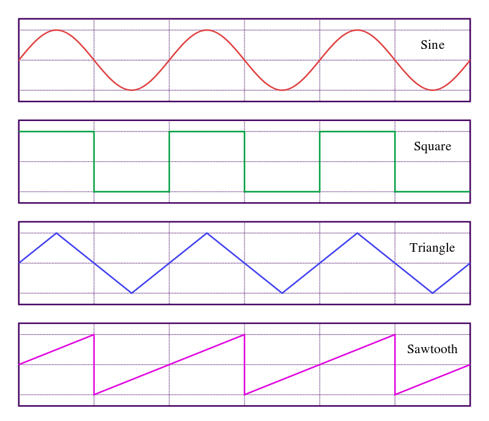
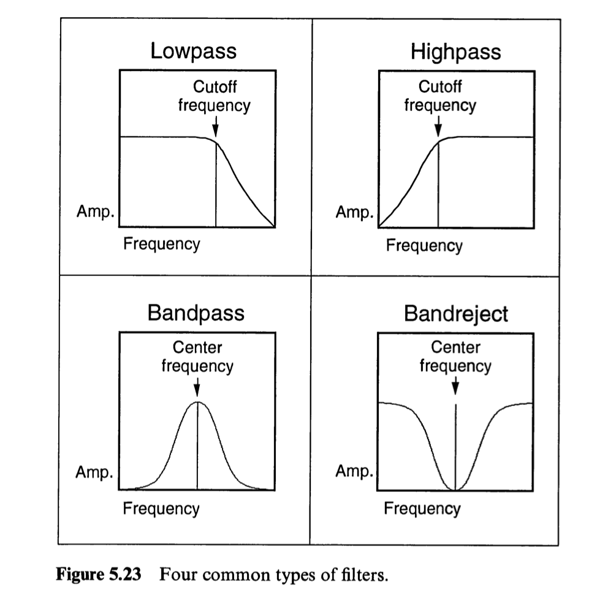
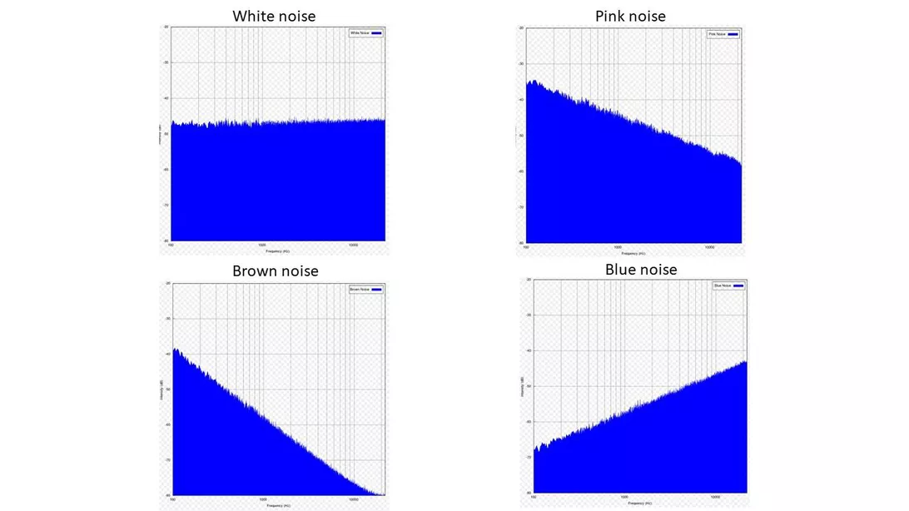

<!doctype html>
<html lang="en">
    <head>
        <meta charset="utf-8">
        <meta name="viewport" content="width=device-width, initial-scale=1.0, maximum-scale=1.0, user-scalable=no">

        <title>synth making from scratch</title>
        <link rel="stylesheet" href="./css/reveal.css">
        <link rel="stylesheet" href="./css/theme/sky.css" id="theme">
        <link rel="stylesheet" href="./css/highlight/zenburn.css">
        <link rel="stylesheet" href="./css/print/paper.css" type="text/css" media="print">


    </head>
    <body>

        <div class="reveal">
            <div class="slides"><section  data-markdown><script type="text/template">


# Assignment 2

[Basic Sound Synthesis](https://moodle3.lsu.edu/mod/assign/view.php?id=988729)
</script></section><section  data-markdown><script type="text/template">
## Oscillators

- Building blocks of synthesis 
- make sound from scratch
- a signal vibrates at a given frequency producing a sound
- types: sine, square, saw, triangle
- each with their own timbre or tone color
</script></section><section  data-markdown><script type="text/template">
<!-- oscillator diagrams -->

</script></section><section  data-markdown><script type="text/template">
<iframe src="https://tonejs.github.io/examples/oscillator.html" style="width: 100%" height="400"></iframe>
</script></section><section  data-markdown><script type="text/template">
## Simple example in Tone

<iframe height="309" style="width: 100%;" scrolling="no" title="PDM Sound: Synthesizer Intro." src="//codepen.io/lsuddem/embed/jKJqYv/?height=309&theme-id=35490&default-tab=result" frameborder="no" allowtransparency="true" allowfullscreen="true">
  See the Pen <a href='https://codepen.io/lsuddem/pen/jKJqYv/'>PDM Sound: Synthesizer Intro.</a> by LSU DDEM
  (<a href='https://codepen.io/lsuddem'>@lsuddem</a>) on <a href='https://codepen.io'>CodePen</a>.
</iframe>

[starter](https://codepen.io/lsuddem/pen/RvYabz?editors=0010)
</script></section><section  data-markdown><script type="text/template">
# Making a Synth from scratch
</script></section><section  data-markdown><script type="text/template">
### Building blocks: Sources and Signals

- A [source](https://github.com/Tonejs/Tone.js/wiki/Sources) in tone is something that produces a sound on its own. 
- Sources are combined to make more complex synthesis and sampling instruments. Sources need to be started with .start().
</script></section><section  data-markdown><script type="text/template">
- A [signal](https://github.com/Tonejs/Tone.js/wiki/Signals) is something that processes a source. 
- Signals are combined to make effects and components. 
- Signals are set by using .value = a number
</script></section><section  data-markdown><script type="text/template">
### Oscillators

The most basic unit of synthesis in tone is [Tone.Oscillator](https://tonejs.github.io/docs/r11/Oscillator). 

* Sine
* Triangle
* Sawtooth
* Square

[example](https://tonejs.github.io/examples/oscillator.html)
</script></section><section  data-markdown><script type="text/template">
## Enevelopes 

- [Tone example](https://tonejs.github.io/examples/envelope.html)

<!-- TODO: add in image of ADSR here!! -->

</script></section><section  data-markdown><script type="text/template">
## ADSR

- Attack time is the time taken for initial run-up of level from nil to peak, beginning when the key is first pressed.
- Decay time is the time taken for the subsequent run down from the attack level to the designated sustain level.
- Sustain level is the level during the main sequence of the sound's duration, until the key is released.
- Release time is the time taken for the level to decay from the sustain level to zero after the key is released.

</script></section><section  data-markdown><script type="text/template">
## Filters

- A [filter](https://tonejs.github.io/docs/r11/Filter) modifies a source sound by either amplifying or attenuating certain frequency ranges of that sound.
</script></section><section  data-markdown><script type="text/template">
<!-- source: computer music tutorial pg 188 - Roads -->


</script></section><section  data-markdown><script type="text/template">
### Filter types can include:
* lowpass
* highpass
* bandpass 
* lowshelf 
* highshelf 
* notch 
* allpass
* peaking 
</script></section><section  data-markdown><script type="text/template">
### Noise

- [Tone.Noise](https://tonejs.github.io/docs/r11/Noise) produces different colors of noise. 
- Each has a different sound, covers a different frequency range,  and is used for different purposes. 
- There are other colors of [noise](https://en.wikipedia.org/wiki/Colors_of_noise) that tone doesn't implement that are good to know about.  
</script></section><section  data-markdown><script type="text/template">

</script></section><section  data-markdown><script type="text/template">## Most often used types

* white
* brown
* pink
  </script></section><section  data-markdown><script type="text/template">
## click left arrow for noise

<iframe height="300" style="width: 100%;" scrolling="no" title="PDM Sound - Tone.Noise remake" src="//codepen.io/lsuddem/embed/VdxRxz/?height=300&theme-id=35490&default-tab=result" frameborder="no" allowtransparency="true" allowfullscreen="true">
  See the Pen <a href='https://codepen.io/lsuddem/pen/VdxRxz/'>PDM Sound - Tone.Noise remake</a> by LSU DDEM
  (<a href='https://codepen.io/lsuddem'>@lsuddem</a>) on <a href='https://codepen.io'>CodePen</a>.
</iframe>

[starter](https://codepen.io/lsuddem/pen/ZwwBPL?editors=0010)
</script></section><section  data-markdown><script type="text/template">
## Envelopes example

<iframe height="300" style="width: 100%;" scrolling="no" title="PDM Sound - Envelopes" src="//codepen.io/lsuddem/embed/OddbRB/?height=300&theme-id=35490&default-tab=result" frameborder="no" allowtransparency="true" allowfullscreen="true">
  See the Pen <a href='https://codepen.io/lsuddem/pen/OddbRB/'>PDM Sound - Envelopes</a> by LSU DDEM
  (<a href='https://codepen.io/lsuddem'>@lsuddem</a>) on <a href='https://codepen.io'>CodePen</a>.
</iframe>

[starter](https://codepen.io/lsuddem/pen/bzzBgZ)
</script></section><section  data-markdown><script type="text/template">
## More envelopes

<iframe height="300" style="width: 100%;" scrolling="no" title="PDM Sound - More Envelopes " src="//codepen.io/lsuddem/embed/rPPWwL/?height=300&theme-id=35490&default-tab=result" frameborder="no" allowtransparency="true" allowfullscreen="true">
  See the Pen <a href='https://codepen.io/lsuddem/pen/rPPWwL/'>PDM Sound - More Envelopes </a> by LSU DDEM
  (<a href='https://codepen.io/lsuddem'>@lsuddem</a>) on <a href='https://codepen.io'>CodePen</a>.
</iframe>

[starter](https://codepen.io/lsuddem/pen/Oddbgr)
</script></section><section  data-markdown><script type="text/template">
## LFO (Low Frequency Oscillator)

<iframe height="300" style="width: 100%;" scrolling="no" title="PDM Sound - LFO" src="//codepen.io/lsuddem/embed/JxxbMy/?height=300&theme-id=35490&default-tab=result" frameborder="no" allowtransparency="true" allowfullscreen="true">
  See the Pen <a href='https://codepen.io/lsuddem/pen/JxxbMy/'>PDM Sound - LFO</a> by LSU DDEM
  (<a href='https://codepen.io/lsuddem'>@lsuddem</a>) on <a href='https://codepen.io'>CodePen</a>.
</iframe>

[starter](https://codepen.io/lsuddem/pen/QYYGmL)</script></section></div>
        </div>

        <script src="./lib/js/head.min.js"></script>
        <script src="./js/reveal.js"></script>

        <script>
            function extend() {
              var target = {};
              for (var i = 0; i < arguments.length; i++) {
                var source = arguments[i];
                for (var key in source) {
                  if (source.hasOwnProperty(key)) {
                    target[key] = source[key];
                  }
                }
              }
              return target;
            }

            // Optional libraries used to extend on reveal.js
            var deps = [
              { src: './lib/js/classList.js', condition: function() { return !document.body.classList; } },
              { src: './plugin/markdown/marked.js', condition: function() { return !!document.querySelector('[data-markdown]'); } },
              { src: './plugin/markdown/markdown.js', condition: function() { return !!document.querySelector('[data-markdown]'); } },
              { src: './plugin/highlight/highlight.js', async: true, callback: function() { hljs.initHighlightingOnLoad(); } },
              { src: './plugin/zoom-js/zoom.js', async: true },
              { src: './plugin/notes/notes.js', async: true },
              { src: './plugin/math/math.js', async: true }
            ];

            // default options to init reveal.js
            var defaultOptions = {
              controls: true,
              progress: true,
              history: true,
              center: true,
              transition: 'default', // none/fade/slide/convex/concave/zoom
              dependencies: deps
            };

            // options from URL query string
            var queryOptions = Reveal.getQueryHash() || {};

            var options = {};
            options = extend(defaultOptions, options, queryOptions);
        </script>


        <script>
          Reveal.initialize(options);
        </script>
    </body>
</html>
